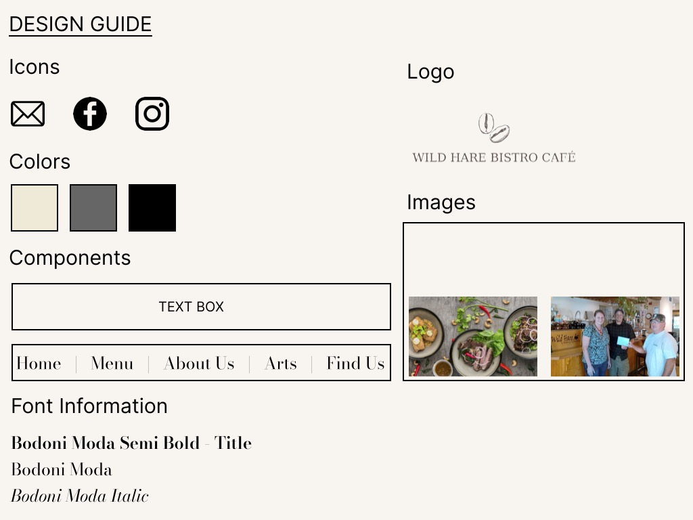

Project 2: Redesigning Wild Hare Bistor Café

Responsive Redesign is a project I’ve been working on as part of the UIUX course (CSCI1300) I’m taking at Brown. It aims to find a website to redesign by understanding the user experience and creating low and high-fidelity prototypes that can adjust to multiple screen sizes including phone, tablet, and computer screens.
The website that I picked: Wild Hare Bistro
This is the website for a local restaurant/café, located in Bemidji, Minnesota.
The website version:
The mobile version:
Why I chose this website
This is a local coffee shop/restaurant and I’ve seen this place in Minnesota when I was visiting. I chose this website because along with my love for coffee, I believe that website is a crucial part of the advertisement for this local businesses and in this case, the website for the Wild Hare Bistro can really be improved for a better user experience. I also have heard from other people regarding how hard it is to use this website.
Problems with this website
- Usability
- There are issues with color contrast. White on bright orange is not really visible, for example (this is for the title “World Flavors and Local Flair”).
- The mobile version is not optimized for mobile devices (only a part of the header is visible and it gets cut out in the middle of the screen). Some other additional problems regarding mobile optimization include:
- The phone number is not clear that it is a phone number. It is written in the same font and font size as the other text.
- In general, there are problems with the format, making it harder and more problematic to follow.
- All the text below the navigation bar was written in the same font and had the same font size.
- The mobile website does not contain any information about the restaurant itself other than the soup of the day and the Dijon Turkey Wrap.
- The menu (NavBar) on the left is not very clear that it is a menu (it looks like it is a part of the picture and thus can be missed by a part of the population who are using the website.
- Learnability
- The big amount of black spaces at the sides of the page are making it hard to focus and understand what is presented on the page (poor learnability).
- There are problems with the hierarchy of the titles. The “Soup of the day” title carries more importance than “Tomato Bisque” for example, but it has a smaller font. This makes it harder to understand and process the organization, headings, and also content.
- Memorability
- There are little to no visual cues showing which part of the website is important (in this case, the menu of the day and the contact information for example). The contact information part is written over an orange background and with very small fonts, and the readers are not paying attention to this. This causes poor memorability.
- Their logo is very pixelated and it doesn’t look like it is their logo. This decreases the memorability of the brand. (When I was designing the website, I couldn’t even use this logo, I designed another logo for them).
- The garlic image below the left side of the page does not have a meaning, yet it still includes a big portion of the page.
- In general, the website looks very disorganized and could cause confusion. It does not have a particular layout (The “Today’s Special and Soup of the Day” title is enclosed in a box, making it the center of the idea and page, making all the attention go in that way).
- It additionally has poor aesthetics and this could cause poor advertisement and poor memorability.
My Low Fidelity Design
Style Guide
My High Fidelity Design
Summary
Overall, from finding the website to designing both low-fi and high-fi prototypes, I was able to see the process of web development using CSS and HTML and think about creative solutions to both accesibility and usability problems